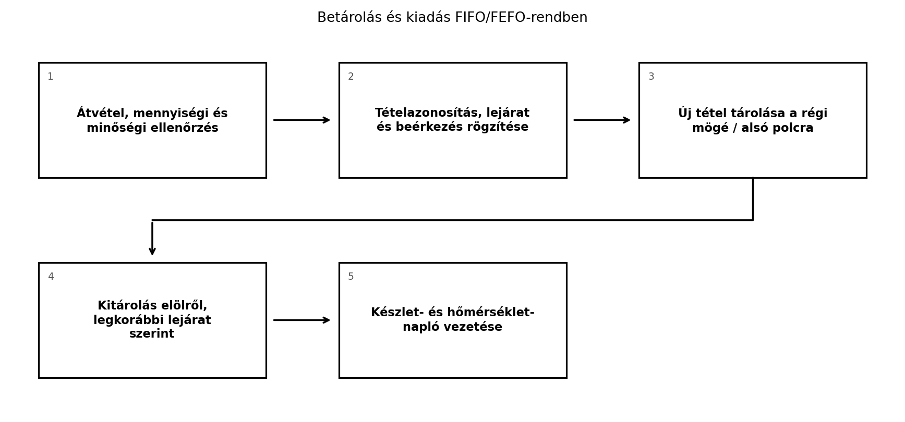

Hajnali műszak előtt a pék a lisztraktárba lép. Azt látja, hogy az éjszaka beérkezett lisztzsákokat valaki az ajtó elé, a régiek elé dobta, az egyik zsák a nedves padlón áll, a hűtőajtó pedig résnyire nyitva maradt. A napi termelés most azon múlik, hogy a nyersanyagokat a megfelelő helyen, megfelelő sorrendben és megfelelő hőmérsékleten tárolják-e. Ebben az alfejezetben a liszt és a többi nyersanyag raktári rendjét, a hűtött tárolást és a készletezés alapelveit tanuljuk meg.
A raktár nem passzív „tárolóhely”, hanem a termékbiztonság egyik első védvonala. A rossz tárolás rontja a liszt sütőipari értékét, kedvez a kártevőknek és a penésznek, elszakíthatja a hűtőláncot, allergén keresztszennyeződést okozhat, és elfedheti a lejárt tételeket. A jó tárolási rend ezért egyszerre higiéniai, élelmiszer-biztonsági és gazdálkodási feladat.
Szemléletes kép. Képzelj el egy kisüzemi raktárt három jól elválasztott zónával: a száraz raktárban raklapokon lisztzsákok, polcokon cukor, só és szárazanyagok; a hűtött kamrában tej, tojáslé és élesztő; a fel nem használt, de lejárat szempontjából sürgős tétel pedig a „korábbi lejáratú” polcon, előre húzva. Minden tételen azonosító, beérkezési idő és lejárati idő szerepel. Az alábbi ábra az anyagáramlás logikáját mutatja:

Definíció. A száraz raktár olyan, szobahőmérsékletű, jól szellőző, száraz helyiség vagy elkerített terület, ahol nedvességre érzékeny, nem hűtendő nyersanyagokat – elsősorban lisztet, darákat, cukrot, sót, magvakat, fűszereket – tárolunk.
Definíció. A hűtött tárolás olyan, szabályozott hőmérsékletű tárolási mód, amely a romlandó nyersanyagok mikrobiológiai és kémiai romlását lassítja. A hűtőlánc a nyersanyag átvételétől a felhasználásig tartó szakaszok összefüggő rendszere.
A zsákos liszt tárolásának célja, hogy a liszt száraz, hűvös, jól szellőző körülmények között maradjon, ne vegyen fel nedvességet, ne melegedjen túl, és ne szennyeződjön kártevőktől, idegen anyagtól vagy vegyszertől.
Eljárás. A liszt zsákos tárolásának lépései:
Megjegyzés. A zsákos lisztet ne tároljuk hűtőkamrában. Amikor a hideg lisztet kivisszük a meleg, párás üzembe, a felületén pára csapódhat le, csomósodás és mikrobaszaporodás indulhat. A lisztet a felhasználás előtt lehetőleg hagyjuk a száraz raktár hőmérsékletére temperálódni.
A szabályos zsákos raktárat és a tipikus hibákat az alábbi ábra veti össze. A bal oldali alaprajzon a zsákok raklapon állnak (1), a faltól távolságot hagyunk (2), a raklapok körül körbejárható ellenőrző sáv van (3), a falak mentén számozott rágcsálócsapdák, monitorozó pontok állnak (4), a régebbi tétel a kiadás felőli oldalon van, dátumcímkével (5), a hűtött kamra ajtaja zárva (6). A jobb oldali képen a hibák: zsák a nedves padlón (7), falhoz tolt raklap (8), a régi elé dobott új zsák (9) és nyitott, felhajtott zsák (10).
A hibás kép minden eleme egy-egy kockázatot jelent: a nedves padlón a liszt csomósodik és penészedik, a falhoz tolt raklap mögött nem ellenőrizhető a kártevő, a rádobott új zsák miatt a régi tétel lejár, a nyitott zsákba por, idegen anyag és kártevő juthat. A faltávolság és a csapdák helye az üzemi előírás és a kártevő-mentesítési terv szerint alakul (ellenőrizendő). A HTML-kiadásban a „Helyes”/„Hibás” gombbal válthatsz, és a „Keresd a hibát!” gyakorlóval ellenőrizheted magad.
Nagyobb pékségekben a lisztet silókban tárolják. Itt csak a tárolásrendet tárgyaljuk; a siló és a szállítóberendezés gépi felépítése a Liszttárolás és lisztszállítás berendezései alfejezetben kerül elő.
Szabály. A silós tárolásban minden silót egyértelműen jelölni kell: melyik lisztfajta, melyik szállítmányból származik, mi a tételszám és a beérkezési dátum. Ugyanabba a silóba csak akkor töltsünk másik lisztfajtát, ha a silót előtte teljesen kiürítették és tisztították, vagy ha a gyártmánylap szerint ez a lisztkeverék pontosan az előírt anyag.
HACCP. Silós tárolásnál a legfontosabb veszélyek: a lisztfajták keresztszennyeződése, a maradék régi liszt megromlása, a kártevők megtelepedése, a szűrő vagy a csőrendszer sérülése miatt bekerülő idegen anyag. A beérkező liszt tételazonosítását, a siló kijelölését és a kiadási sorrendet a HACCP-terv szerint dokumentálni kell. A kritikus határértékek az üzemi tervtől függenek (ellenőrizendő: a pékség HACCP-terve és a siló gyártói utasítása).
A hűtött tárolás nem arról szól, hogy „hideg van-e”, hanem arról, hogy az adott nyersanyag a gyártó és a HACCP-terv szerinti hőmérsékleti tartományban marad-e. A hőmérséklet emelkedése felgyorsítja a mikrobák szaporodását; a hűtőlánc megszakadását az A mikrobák gátlása és elpusztítása alfejezet szerint kell értékelni.
Előírás. Az élelmiszer-higiéniai követelmények szerint a gyorsan romló nyersanyagokat olyan hőmérsékleten kell tárolni, amely nem engedi meg a kórokozók veszélyes szaporodását. A konkrét tárolási hőmérsékletet az adott élelmiszer gyártói címkéje, a belső GHP/GMP-utasítás és a HACCP-terv rögzíti. Az alábbi értékek tanulási példák, nem helyettesítik az üzemi előírást (ellenőrizendő: gyártói adatlap és hatósági útmutató).
| Nyersanyagcsoport | Jellemző hűtött tárolási hőmérséklet (tanulási példa) | Megjegyzés |
|---|---|---|
| Pasztőrözött tej | 2–5 °C | Gyorsan felhasználandó; hőmérséklet-ingadozás kerülendő |
| Folyékony tojás / tojáslé | 0–4 °C | Különösen érzékeny; felbontás után azonnal felhasználandó |
| Friss élesztő | 0–4 °C (gyártói adatlap szerint legfeljebb 4–6 °C; ellenőrizendő) | Fagyasztani csak gyártói előírás szerint szabad; zárt, szagmentes környezetben tárolandó |
| Margarin, vaj | 2–8 °C | Szagátvételtől óvni kell |
| Fagyasztott gyümölcs, fagyasztott vaj | −18 °C alatt | A fagyasztólánc megszakadása minőségromlást okoz |
Higiénia. A hűtőkamrában nyers, folyékony anyagokat mindig zárt edényben vagy gyári csomagolásban tárolunk. A nyers tojásos edény ne kerüljön kész, fogyasztásra szánt anyag fölé. A hűtő belső felületét a takarítási terv szerint tisztítani és fertőtleníteni kell.
Allergén. A tej, tojás, szezám, diófélék és egyéb allergén nyersanyagok a hűtőben is legyenek elkülönítve és jól lezárva. A folyékony tojás kifolyása allergén keresztszennyeződést okozhat a mellette tárolt margarinon vagy a polc felületén. A „tejmentes” vagy „tojásmentes” alapanyagokat felső polcra vagy külön rekeszbe tegyük, hogy rájuk ne csöpöghessen allergén anyag.
Definíció. A FIFO (First In, First Out) elv szerint a korábban beérkezett tételt használjuk fel először. A FEFO (First Expired, First Out) elv szerint a legkorábbi minőségmegőrzési vagy fogyaszthatósági idővel rendelkező tételt kell először kiadni.
A gyakorlatban a FEFO pontosabb, mint a FIFO, mert nem az számít, melyik tétel érkezett korábban, hanem az, melyik jár le hamarabb. A kettő gyakran egybeesik, de ha egy később érkezett tétel lejárata közelebbi, azt kell előre tenni.
Szabály. A raktárban mindig az új tétel kerüljön hátra, alulra vagy mögé, a régi tétel pedig előre, felülre vagy a polc elejére. Így a dolgozó automatikusan a korábbi tételt fogja meg először.
Példa. A lisztraktárban van 160 kg BL 55 liszt a 2025.03.10-i tételből és 200 kg BL 55 liszt a 2025.03.18-i tételből. A gyártás 250 kg-ot igényel. FIFO szerint először a 160 kg régi tételt használjuk fel teljesen, majd a hiányzó 90 kg-ot a második tételből. A második tételből 110 kg marad a következő gyártásra. Ha a második tétel lejárata hamarabb lenne, mint az elsőé, akkor FEFO szerint mégis abból adnánk ki először.
Készletezési alapfogalmak.
Összefüggés. A raktári készlet alapösszefüggése:
ahol a nyitókészlet, a beszállított mennyiség, a gyártásnak kiadott mennyiség, a zárókészlet.
Példa. Hétfőn reggel 180 kg liszt van a raktárban. Délelőtt érkezik 500 kg, a tésztakészítés pedig 240 kg-ot használ fel. A zárókészlet:
A rendelési pont számításához a napi felhasználást, a szállítási időt és a biztonsági tartalékot vesszük figyelembe.
Számítás. Egy pékség napi lisztfelhasználása . A szállító a megrendelés után nap alatt szállít. A biztonsági tartalék . A rendelési pont:
Amikor a lisztkészlet 240 kg-ra csökken, a gyártónak fel kell adnia a következő rendelést, hogy a szállítási idő alatt se fogyjon el a liszt. A maximumkészlet ne haladja meg a tárolókapacitást; ha a raktárban legfeljebb 1000 kg liszt fér el, a rendelési mennyiség legfeljebb lehet, a helyi készletezési szabály szerint (ellenőrizendő: üzemi beszerzési szabályzat).
A nyersanyag-nyilvántartás célja, hogy mindig tudjuk, miből mennyi van, melyik tétel hol található, és meddig használható fel. A hűtőhőmérséklet-napló pedig azt igazolja, hogy a romlandó anyagok végig a megengedett hőmérsékleten voltak.
Gyakorlati minta. A készletnyilvántartó kartonon szerepeljen:
A hűtőhőmérséklet-naplóban naponta legalább két mérést – műszak elején és végén – rögzítünk (tanulási példa; a gyakoriságot a HACCP-terv rögzíti, ellenőrizendő), a mért hőmérséklettel, az időponttal és az ellenőrző dolgozó aláírásával. A mérőeszköz hitelességét rendszeresen ellenőrizni kell.
Technológiai jellegű ellenőrzőlista. Az alábbi lépéssort minden raktárrendezésnél és napi ellenőrzésnél kövesd:
A raktározás HACCP-pontjai üzemenként eltérhetnek; az alábbi táblázat tanulási példa a gondolkodásra, nem helyettesíti a pékség hivatalos HACCP-tervét (ellenőrizendő: minden határérték és monitoring gyakoriság).
| Veszély | Megelőzés | Kritikus határ (tanulási példa) | Monitoring | Helyesbítés |
|---|---|---|---|---|
| Hűtött nyersanyag hőmérséklet-emelkedése | Hűtőberendezés karbantartása, ajtózárás, hőmérő | 0–5 °C, a HACCP-terv szerint | Naponta legalább kétszer | Hűtőgép-javítás, áthelyezés, selejtezés |
| Liszt kártevő- vagy penészfertőzöttsége | Száraz raktár, raklap, faltávolság, zárható csomagolás | Nincs látható rágás, ürülék, penész, dohos szag | Minden átvételnél, időszakos ellenőrzés | Tétel elszeparálása, kártevőirtás, selejtezés |
| Allergén keresztszennyeződés | Elkülönített, zárt tárolás; folyékony anyagok alátéttel | Allergén nyersanyag nem érintkezik más anyaggal | Műszakonkénti szemle | Felület tisztítása, sérült csomagolás cseréje, tétel elkülönítése |
Egy tanulópékségben a reggeli átvételkor a pék azt tapasztalta, hogy a friss lisztzsákokat a régiek elé tették. Két hónap múlva a hátsó zsákokban dohos szagot érzett, és a lisztből már nem lett szép, laza kenyér. A kivizsgálás szerint nem feltétlenül a liszt romlott meg, de a hátsó tétel hosszú ideig állt, és közben párásodott, mert a fal mellett tárolták. A tanulság az lett, hogy minden bevételezés után a régebbi tételt előre kell húzni, a fal melletti sávot pedig szabadon kell hagyni.
Cél. A tanuló ellenőrizze a nyersanyagtárolás rendjét, a FIFO/FEFO sorrendet és a hűtőhőmérsékletet, majd javítsa ki az eltéréseket.
Eszközök és anyagok. Tiszta munkaruha, hajháló, zárt cipő, hőmérő, készletkarton, toll, takarítóeszköz, zárható edények, raklap vagy polc, jelölők.
Higiénia. A raktárban is tiszta munkaruhában dolgozz; az anyagok megfogása előtt és után moss kezet, különösen hűtött nyersanyagok érintése előtt. Ékszer, gyűrű, óra ne legyen rajtad. Ha hasmenésed, hányásod vagy gennyes sebed van, élelmiszerraktárban sem dolgozhatsz.
Gépbiztonság. Ne mássz fel a raklapokra, ne húzz le zsákot magas rakatról erőből; használj megfelelő fellépőt vagy kézi anyagmozgató eszközt, ha a munkakörödben arra kiképeztek. A hűtőkamra belső reteszét ellenőrizd, hogy belülről nyitható legyen.
Lépések.
Ellenőrzési pontok. A hűtőhőmérséklet a megengedett tartományban van-e; a legkorábbi lejárat van-e elöl; nincs-e sérült csomag; az allergén anyagok zárva vannak-e; a készletnyilvántartás egyezik-e a ténylegesen leltározott mennyiséggel.
Tipikus hibák a gyakorlatban. A zsákot földre teszik; az új tételt előre rakják; a hűtő ajtaját nyitva hagyják; a hőmérő nem látható; a készletkartonra nem írják fel a tételszámot; a folyékony tojást a tej fölé teszik.
A tárolási művelet minősége a nyersanyag állapotán és a nyilvántartáson mérhető le.
A leggyakoribb eltérés a hűtőhőmérséklet-túllépés és a FIFO megsértése. Mindkettő azonnali helyesbítést igényel, mert termékbiztonsági és minőségi kockázatot hordoz.
1. feladat (A) Sorold fel, mi kerüljön a liszt zsákos tárolásánál a raklap és a fal közé, illetve miért fontos a faltávolság?
2. feladat (A) Határozd meg a FIFO és a FEFO közötti különbséget egy-egy rövid példával.
3. feladat (B) Egy pékség nyitó lisztkészlete 200 kg. A nap folyamán beérkezik 600 kg, a tésztakészítés 320 kg-ot használ fel. Mennyi a zárókészlet? Írd fel a képletet és a behelyettesítést.
4. feladat (B) A raktárban két tétel BL 80 liszt van. Az első tétel 140 kg, lejárat 2025.05.10. A második tétel 180 kg, lejárat 2025.04.25. A gyártás 250 kg lisztet igényel. Melyik tételből mennyit adj ki FEFO szerint, és mennyi marad az egyes tételekből?
5. feladat (C) Hűtőkamra-hibát észlelsz: a reggeli hőmérséklet 6 °C, a tegnap esti mérés 4 °C volt. Fogalmazz meg legalább három lehetséges okot, és mindegyikhez egy ellenőrzési vagy helyesbítési lépést.
6. feladat (D) Állíts össze egy heti hűtőhőmérséklet-napló táblázatot a következő mért értékekkel: hétfő reggel 4 °C, este 5 °C; kedd reggel 5 °C, este 7 °C; szerda reggel 6 °C, este 8 °C. Melyik mérésnél kell beavatkozni, ha a határ 5 °C? Írd le a helyesbítő lépéseket.
1. feladat (A) A raklap és a fal közé levegőréteg kerüljön, jellemzően 30–50 cm. A raklap megemeli a zsákot, a faltávolság pedig lehetővé teszi a szellőzést, a kártevők ellenőrzését és a takarítást. A zsák ne érjen a falhoz, mert a falon pára csapódhat le.
2. feladat (A) FIFO: a korábban beérkezett tételt használjuk először. Példa: a hétfői lisztet előbb, mint a szerdait. FEFO: a legkorábbi lejáratú tételt használjuk először. Példa: ha a szerdai tétel lejárata hamarabb van, mint a hétfőié, akkor a szerdait használjuk előbb, mert az jár le hamarabb.
3. feladat (B) Képlet:
Behelyettesítés:
A zárókészlet 480 kg.
4. feladat (B) FEFO szerint a legkorábbi lejáratú a második tétel: 2025.04.25. Ezért először a második tételt adjuk ki, amennyire a gyártás igénye tart. A gyártás 250 kg. A második tételből 180 kg-ot használunk fel, a maradék 70 kg-ot az első tételből. Az első tételből 70 kg fogy, marad 140 − 70 = 70 kg. A második tételből 180 kg fogy, marad 0 kg.
5. feladat (C) Lehetséges okok: - A hűtő ajtaja nem záródott rendesen, mert megsérült a tömítés. Ellenőrzés: nézd meg a tömítést, csukd be az ajtót, és próbáld kihúzni egy papírlappal. - A hűtőt túl sok, meleg anyaggal töltötték meg, ezért átmenetileg megemelkedett a belső hőmérséklet. Helyesbítés: a betárolást csökkentsd, az anyagokat hűtve tedd be. - A hűtő kompresszora vagy termosztátja hibás. Helyesbítés: jelezd a karbantartónak, és az anyagokat helyezd át működő hűtőbe. - A hűtő hőmérője pontatlan. Ellenőrzés: hitelesített hőmérővel összeméred. - Az ajtót valaki hosszabban nyitva hagyta. Helyesbítés: a mérési és használati fegyelem megerősítése.
6. feladat (D) Táblázat:
| Nap | Reggel (°C) | Este (°C) | Megfelel? (határ: 0–5 °C) |
|---|---|---|---|
| Hétfő | 4 | 5 | Igen, 5 °C határértéken belül |
| Kedd | 5 | 7 | Este nem, 7 °C meghaladja |
| Szerda | 6 | 8 | Reggel és este nem |
Beavatkozás kell: kedd este 7 °C-nál, szerda reggel 6 °C-nál és szerda este 8 °C-nál. Helyesbítő lépések: az anyagok áthelyezése megfelelő hűtőbe, a hűtő leállítása és karbantartó értesítése, a hőmérsékleti adatok dokumentálása, a gyártmánylap/HACCP-terv szerinti selejtezési döntés.
A lisztet és a száraz nyersanyagokat száraz, jól szellőző, hűvös raktárban, raklapon, faltól elválasztva kell tárolni. A zsákok felirata mindig legyen olvasható, a sérült, dohos vagy kártevő-nyomos tételt különítsük el. A silós tárolás alapja a tételazonosítás, a silók egyértelmű jelölése és a lisztfajták keresztszennyeződésének megelőzése. A romlandó anyagokat hűtve, gyártói előírás szerint, napi hőmérséklet-naplóval kell tárolni. A FIFO a beérkezési sorrend, a FEFO a legkorábbi lejárat szerinti kiadást jelenti; a gyakorlatban a FEFO pontosabb, és mindig a legkorábbi minőségmegőrzési idejű tételt kell előre tenni. A készletnyilvántartás a bevételezésből, kiadásból és leltározásból áll, az alapösszefüggés: zárókészlet = nyitókészlet + bevételezés − kiadás. A minimumkészlet a termeléskiesés elkerülésére, a maximumkészlet a tárolókapacitásra és a romlásveszélyre ad határt, a rendelési pont pedig a napi felhasználás, a szállítási idő és a biztonsági tartalék alapján számítható. Továbbvitt eredmény. A tárolási rendet, a FIFO/FEFO elvet és a hőmérséklet-napló vezetését a Nyersanyagok előkészítő műveletei, a Liszttárolás és lisztszállítás berendezései, illetve a Kereskedelem, árubeszerzés, készletgazdálkodás és értékesítés alfejezetekben használjuk tovább.